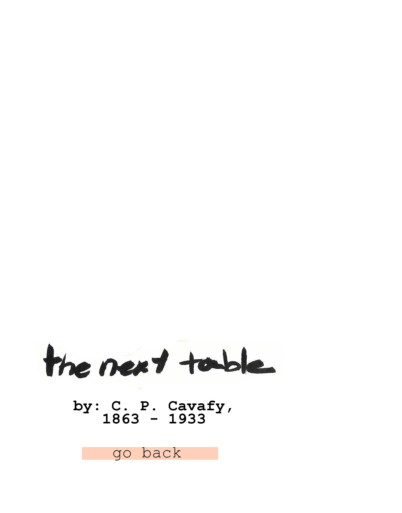
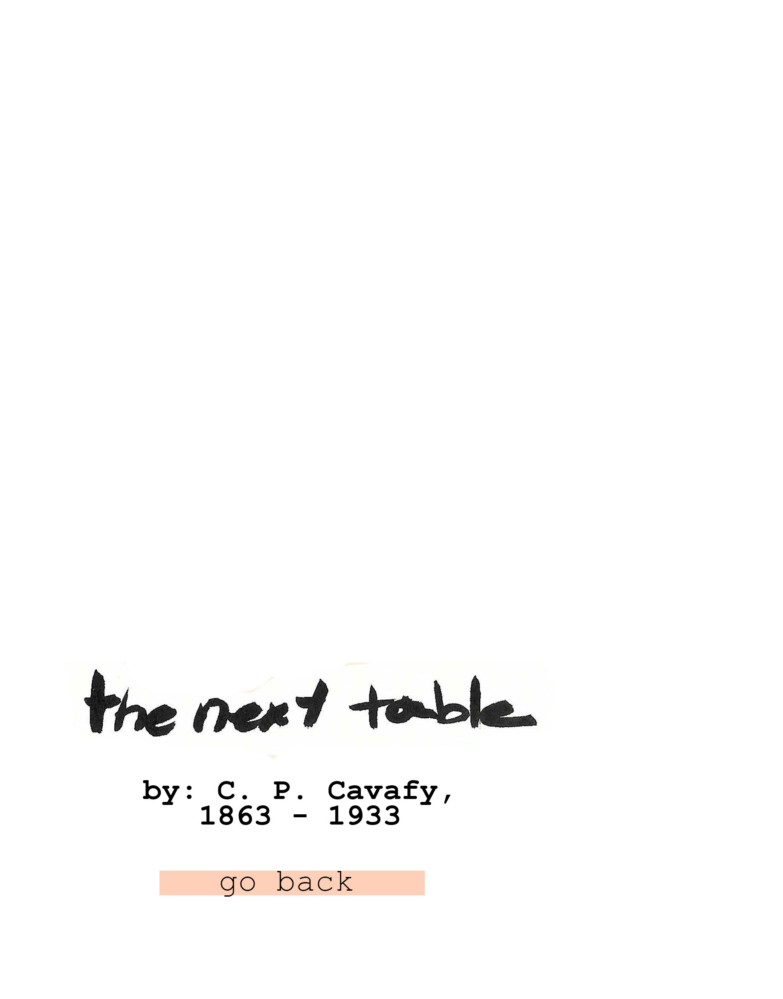

He can’t be more than twenty-two. And yet I’m certain it was at least that many years ago that I enjoyed the very same body.
This isn’t some erotic fantasy. I’ve only just come into the casino and there hasn’t been time enough to drink. I tell you, that’s the very same body I once enjoyed.
And if I can’t recall precisely where—that means nothing.
Now that he’s sitting there at the next table, I recognize each of his movements—and beneath his clothes I see those beloved, naked limbs again.